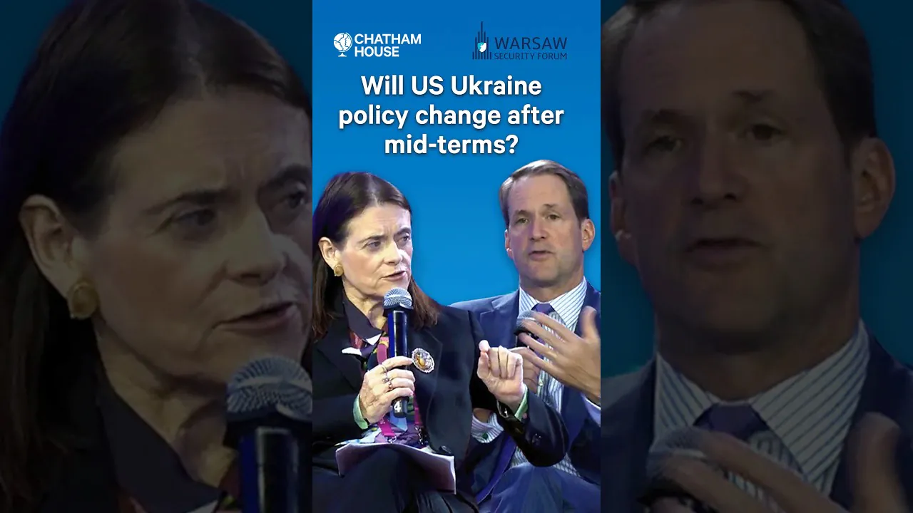
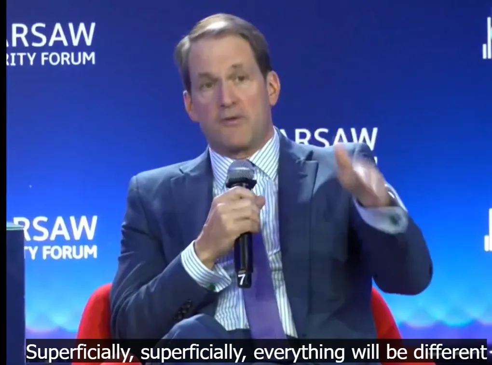

3일전 폴란드 바르샤바 안보포럼에서
핀란드 외교협회 의원이 미국 하원 의원(미국 정보위원회 간사 Jim Himes)한테 질문함
" 만약 민주당이 이기면 유럽의 안보에 대해서 어떻게 나올까요? 어떻게 바뀔까요? "
다소 의역)
일단 겉으로는 매우 다를 겁니다.
덴마크나 캐나다를 지금처럼 위협하는 일은 없을 겁니다.
동맹국들과의 관계도 정상화될 것입니다.
그러나 예전으로 돌아갈 수는 없을 겁니다.
미국 유권자들은 미국이 유럽의 방위를 너무 오랫동안 부담해 왔다고 생각합니다.
트럼프식 무역 정책을 둘러싸고 논란이 많지만, 많은 미국 유권자들은 관세가 하나의 경제 정책으로서 나쁘지 않다고 인식하고 있습니다.
그리고 미국에서는 고립주의 성향이 점점 강해지고 있습니다.
민주당이 집권한다고 해서 더 자유로운 무역 정책이 시행될 것이라고 기대하지 마십시오.
미국 역시 현재 재정적으로 상당한 부담을 안고 있습니다.
안보 측면에서 유럽은 좀 더 자립해야 합니다.
-------------
트럼프 물러나고 민주당 되도라도 좀더 세련되고 과격하게 안할뿐이이지 이미 미국의 대외 기조는 더 이상 예전같을수가 없다는 이야기.
유럽이 중국에 줄서면 어떻게 됨?